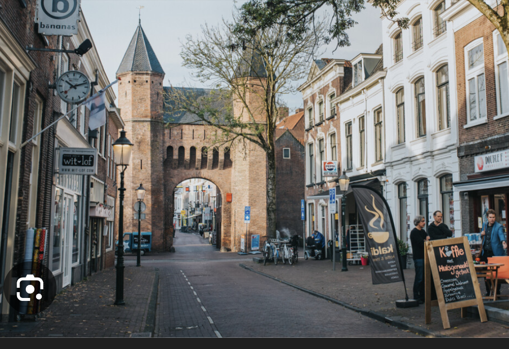
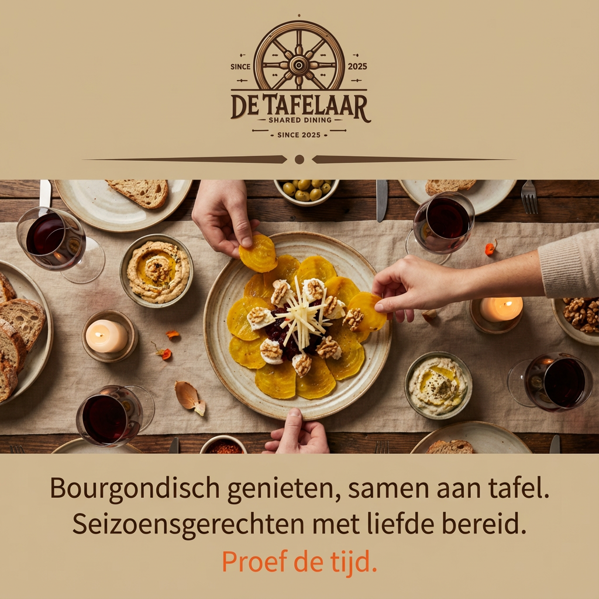
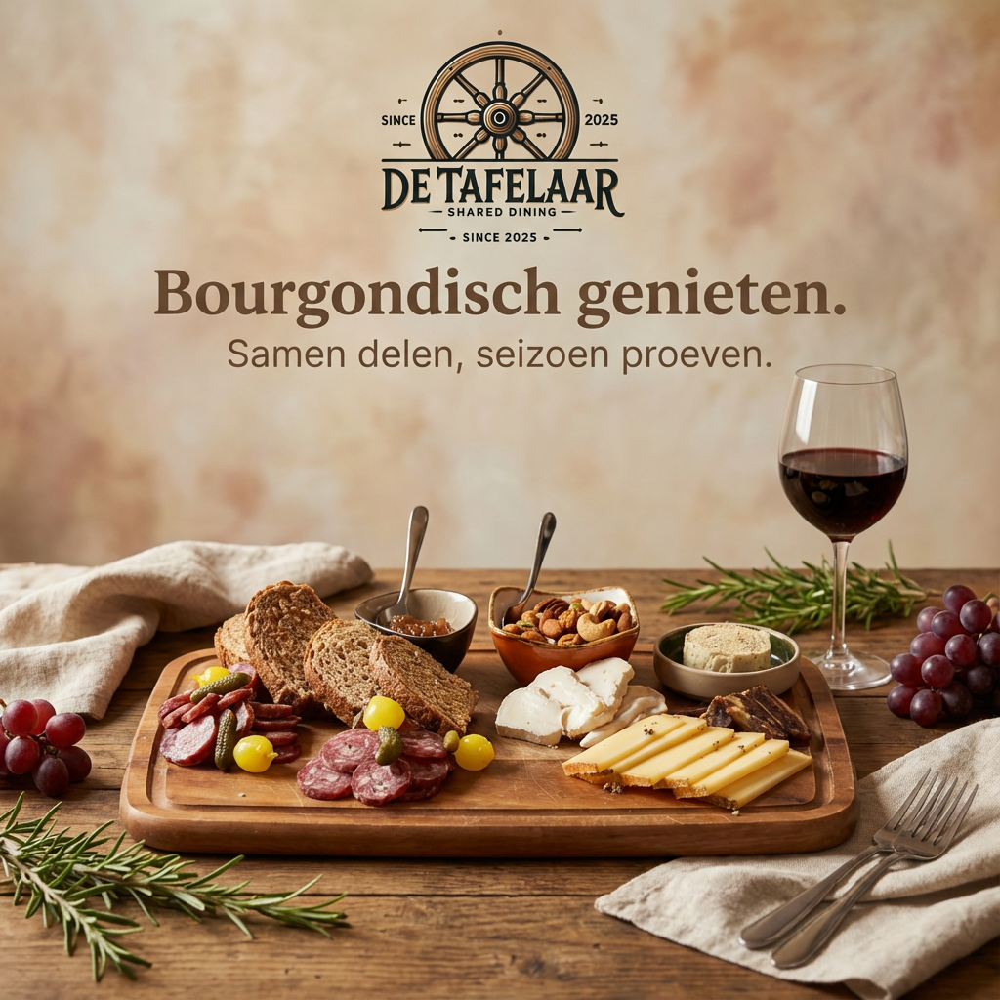

Restaurant Amersfoort Centrum · Kamp 8
De Tafelaar — Shared Dining Restaurant in Amersfoort
Samen aan tafel. Kleine gerechten, grote gezelligheid.
Welkom bij De Tafelaar op de Kamp in Amersfoort centrum. Shared dining voor lunch, borrel en diner met lokale seizoensgerechten om te delen. Op 5 minuten van Flint, open wo–zo.
Waarom De Tafelaar
Eten zoals het bedoeld is: samen
Shared dining
Proef en deel een verscheidenheid aan kleine, seizoensgebonden gerechtjes.
Lokale makers
We werken samen met lokale boeren en producenten voor de verste smaken.
Duurzaam
Onze keuken is gericht op duurzaamheid, met respect voor mens en natuur.
Centrale locatie
Gevestigd in de historische binnenstad van Amersfoort, makkelijk bereikbaar.



Op weg naar Flint of het centrum?
Onze Buurtgids helpt je de beste plekken te vinden voor en na je theaterbezoek, of om de leukste hotspots op de Kamp te ontdekken.
- Dichtbij Flint
- Hotspots in de straat Kamp
Restaurant in Amersfoort centrum
De Tafelaar is een shared dining restaurant op de Kamp in het hart van Amersfoort centrum. Op zoek naar een plek om lekker te eten in Amersfoort? We serveren kleine gerechten van lokale makers — van kazen en charcuterie tot warme seizoensgerechten en desserts. Alles om gezellig samen te delen aan tafel. Op loopafstand van Theater de Flint (5 min) en op een steenworp afstand van de Kamperbinnenpoort. Vanaf station Amersfoort Centraal ben je in circa 22 minuten lopend bij ons — of korter met bus of fiets.
Gerechten variëren van €3,50 tot €15. Reken op €25–35 per persoon voor een compleet diner. Het Chef's Choice arrangement (€45 p.p.) laat de keuken verrassen. Woensdag t/m zondag open voor borrel en diner. Liever thuis genieten? Bekijk onze ophalenkaart.
Op kantoor of op locatie? Tafelaar × Jezza Cooks Catering bezorgt office lunch vanaf €7,50 p.p. en events tot 150 personen in heel Amersfoort — bereid in dezelfde restaurantkeuken.


Zo werkt het
Hoe werkt shared dining bij De Tafelaar?
Bij shared dining bestel je meerdere kleine gerechten die je deelt met je tafelgenoten. Kies uit kazen, charcuterie, koude en warme gerechten en desserts — allemaal bereid met seizoensgebonden, lokale producten. We adviseren 2 à 3 gerechten per persoon om samen te delen. Geen keuze kunnen maken? Het Chef's Choice arrangement (€45 p.p.) laat de keuken voor je kiezen, met optioneel een bijpassend wijnarrangement van Korte Garde voor €28 p.p. Ons team helpt je graag bij het samenstellen van jullie tafel.
Ons verhaal
Samen eten, samen ontdekken
Bij De Tafelaar draait alles om samen eten en proeven. Kleine gerechten om te delen, gemaakt met verse, lokale producten en bereid volgens het seizoen.
Denk aan eieren en groenten van Het Derde Erf, ijs van De IJsmakerij of een goed glas van Rock City en De Drie Ringen.
Hapje voor hapje ontdek je nieuwe smaken en geniet je van de creativiteit van de keuken.
In de huiskamer ben je ook welkom om alleen te komen eten. Schuif aan bij de aanschuiftafel, ontmoet andere gasten en laat de gesprekken vanzelf ontstaan. Zo wordt eten bij De Tafelaar een gedeelde ervaring, of je nu met gezelschap komt of alleen.
Openingstijden & locatie
Openingstijden
| Maandag – dinsdag | Gesloten |
| Woensdag – donderdag | 17:00 – 23:00 |
| Vrijdag | 11:00 – 00:00 |
| Zaterdag | 11:00 – 00:00 |
| Zondag | 11:00 – 23:00 |